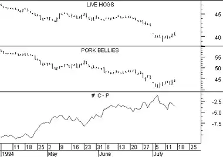

Spreads show the difference in price between two securities. Spreads are normally calculated using options.
A spread involves buying one security and selling another with the goal of profiting from the narrowing or expanding of the difference between the two securities. For example, you might buy gold and short silver with the expectation that the price of gold will rise faster (or fall more slowly) than the price of silver.
You can also spread a single security by buying one contract and selling another. For example, buy an October contract and sell a December contract.
The following charts show Live Hogs (top chart), Pork Bellies (middle chart), and the spread between the Hogs and Bellies (bottom chart).
 This spread involves buying the Hogs and shorting the Bellies with the anticipation that Hogs will rise faster (or fall more slowly) than Bellies. You can see that during the time period shown, both Hogs and Bellies decreased in price. As desired, the price of Hogs fell less than the price of Bellies. This is shown by the spread narrowing from -10.55 to -3.58, with a resulting profit of 6.97.